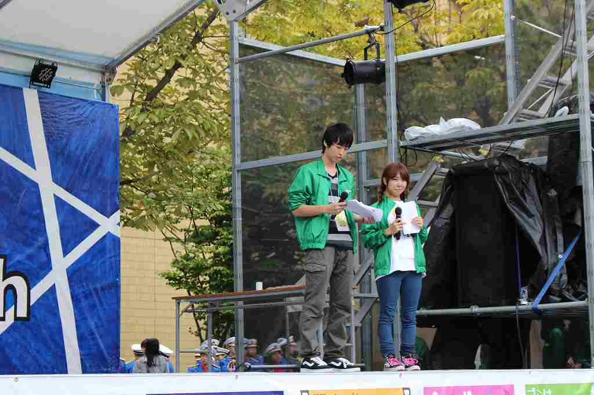

|
|

|
私たち相模原祭実行委員会は、
相模原祭という大学祭を運営する団体で、
企画局・総務局・広報局で構成されています。
毎週1～2日にみんなで集まり、相模原祭に向け準備をしています。
夏休みや直前期は活動日が増えて忙しいですが、終わった時の達成感は計り知れないものです！
また委員会だからといって決して堅苦しくありません！
合宿や青山祭の店、ごはん会、局ごとのイベントなど活動内・外ともに楽しく過ごしています！
企画局からのメッセージ企画局は相模原で行う企画の発案、運営をしている局です。物を作るのが好きな人、人を喜ばせたりするのが好きな人待っています。私たちと一緒に相模原祭を盛り上げましょう！！ |
 |
|  |
総務局からのメッセージ総務局は相模原祭の準備や運営、相模原祭に参加してくれる団体さんのサポートをする局です♪多くの人と関わりながら、私たちと一緒に相模原祭を支えてみませんか？ |
広報局からのメッセージ広報局は相模原祭を多くの人に広める活動を行っています！私たちと一緒に相模原祭の魅力を伝えませんか？ |
Copyright © 2017 若林 徹 All Rights Reserved.